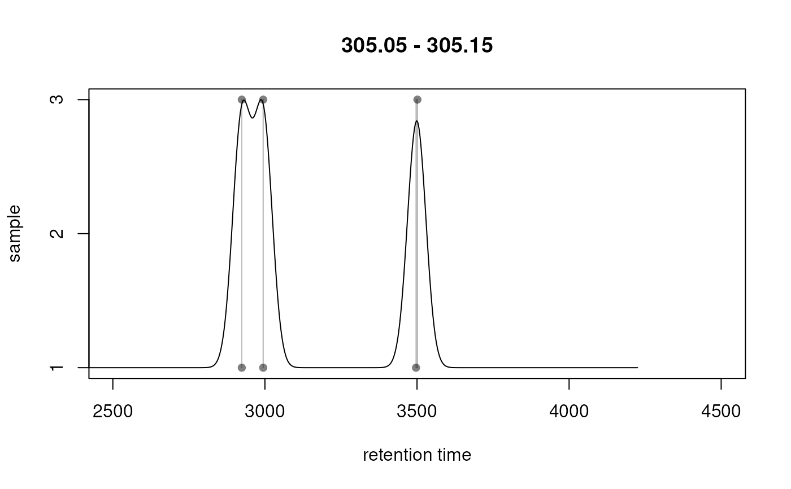

Plot chromatographic peak density along the retention time axis
Source:R/methods-XCMSnExp.R
plotChromPeakDensity.RdPlot the density of chromatographic peaks along the retention
time axis and indicate which peaks would be (or were) grouped into the
same feature based using the peak density correspondence method.
Settings for the peak density method can be passed with an
PeakDensityParam object to parameter param. If the object contains
correspondence results and the correspondence was performed with the
peak groups method, the results from that correspondence can be
visualized setting simulate = FALSE.
Arguments
- object
A XCMSnExp object with identified chromatographic peaks.
- mz
numeric(2)defining an mz range for which the peak density should be plotted.- rt
numeric(2)defining an optional rt range for which the peak density should be plotted. Defaults to the absolute retention time range ofobject.- param
PeakDensityParam from which parameters for the peak density correspondence algorithm can be extracted. If not provided and if
objectcontains feature definitions with the correspondence/ peak grouping being performed by the peak density method, the corresponding parameter class stored inobjectis used.- simulate
logical(1)defining whether correspondence should be simulated within the specified m/z / rt region or (withsimulate = FALSE) whether the results from an already performed correspondence should be shown.- col
Color to be used for the individual samples. Length has to be 1 or equal to the number of samples in
object.- xlab
character(1)with the label for the x-axis.- ylab
character(1)with the label for the y-axis.- xlim
numeric(2)representing the limits for the x-axis. Defaults to the range of thertparameter.- main
character(1)defining the title of the plot. By default (formain = NULL) the mz-range is used.- type
character(1)specifying how peaks are called to be located within the region defined bymzandrt. Can be one of"any","within", and"apex_within"for all peaks that are even partially overlapping the region, peaks that are completely within the region, and peaks for which the apex is within the region. This parameter is passed to the chromPeaks function. See related documentation for more information and examples.- ...
Additional parameters to be passed to the
plotfunction. Data point specific parameters such asbgorpchhave to be of length 1 or equal to the number of samples.
Details
The plotChromPeakDensity function allows to evaluate
different settings for the peak density on an mz slice of
interest (e.g. containing chromatographic peaks corresponding to a known
metabolite).
The plot shows the individual peaks that were detected within the
specified mz slice at their retention time (x-axis) and sample in
which they were detected (y-axis). The density function is plotted as a
black line. Parameters for the density function are taken from the
param object. Grey rectangles indicate which chromatographic peaks
would be grouped into a feature by the peak density correspondence
method. Parameters for the algorithm are also taken from param.
See groupChromPeaks() for more information about the
algorithm and its supported settings.
See also
groupChromPeaks() for details on the
peak density correspondence method and supported settings.
Examples
## Load a test data set with detected peaks
library(MSnbase)
data(faahko_sub)
## Update the path to the files for the local system
dirname(faahko_sub) <- system.file("cdf/KO", package = "faahKO")
## Plot the chromatographic peak density for a specific mz range to evaluate
## different peak density correspondence settings.
mzr <- c(305.05, 305.15)
plotChromPeakDensity(faahko_sub, mz = mzr, pch = 16,
param = PeakDensityParam(sampleGroups = rep(1, length(fileNames(faahko_sub)))))
#> Warning: Use of 'plotChromPeakDensity' on 'XCMSnExp' isdiscouraged. Please extract chromatographic data first and call 'plotChromPeakDensity' directly on the 'XChromatograms' object. See ?XChromatograms, section 'Correspondence analysis' for more details.
